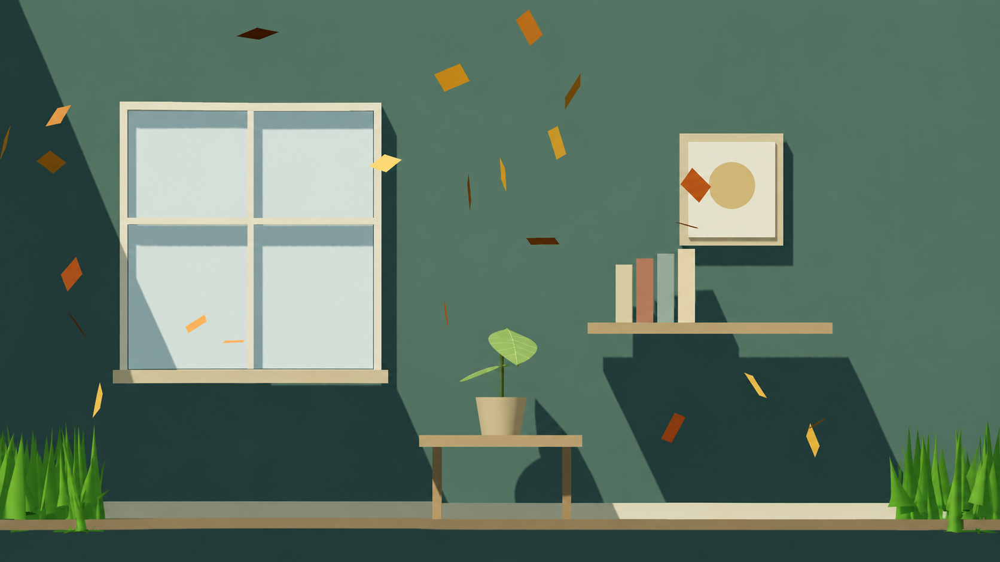
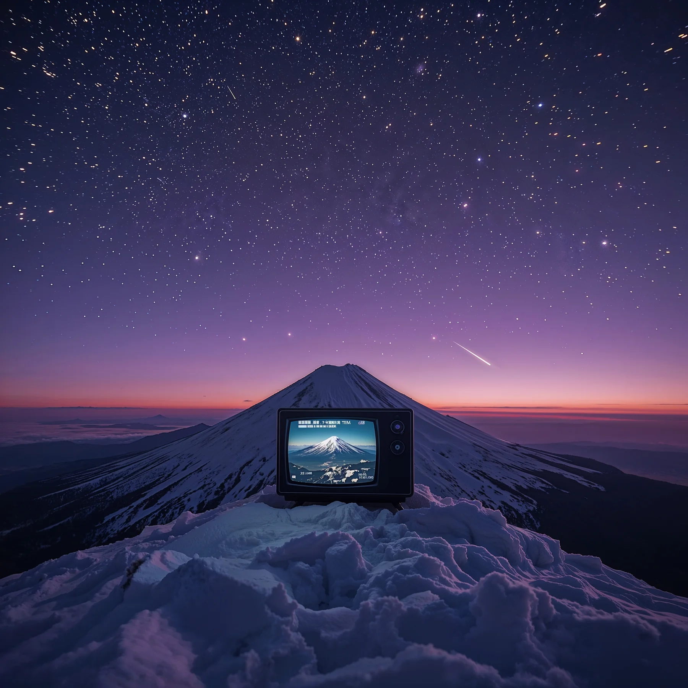
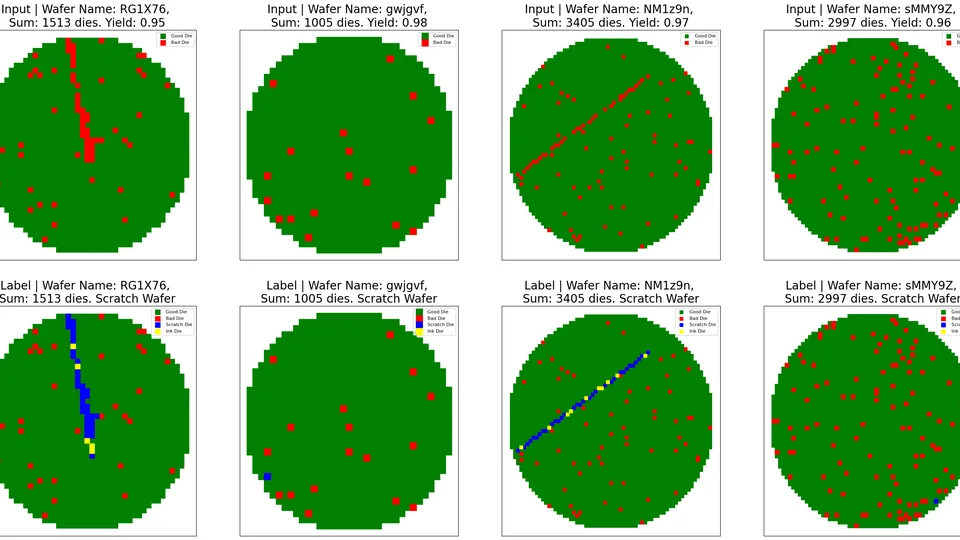
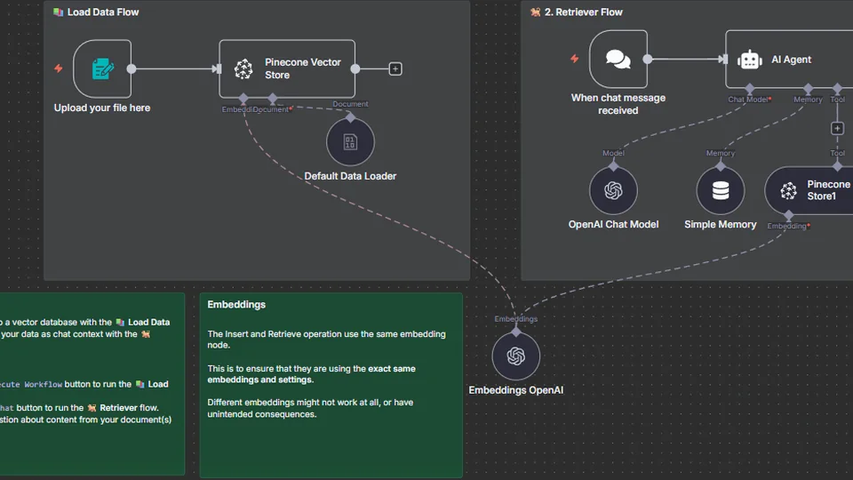
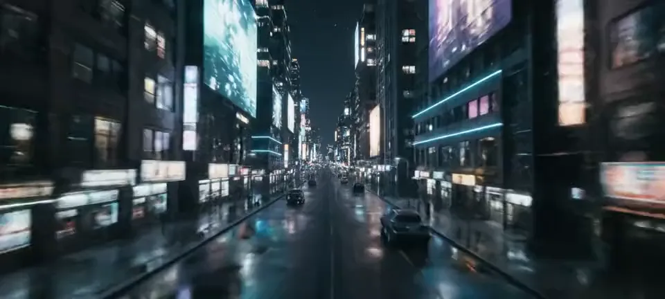
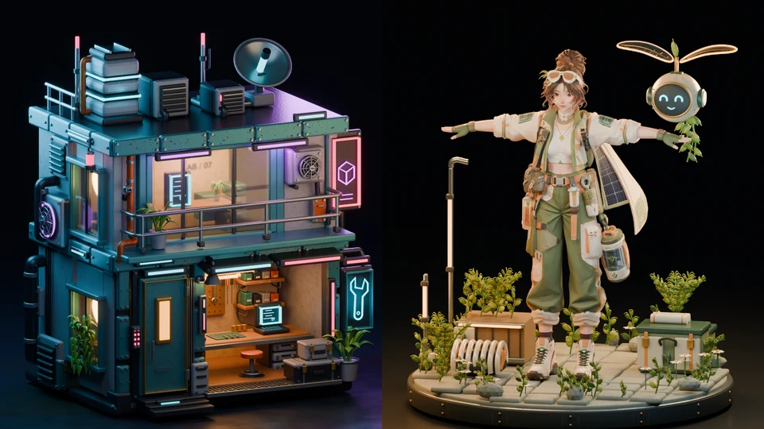
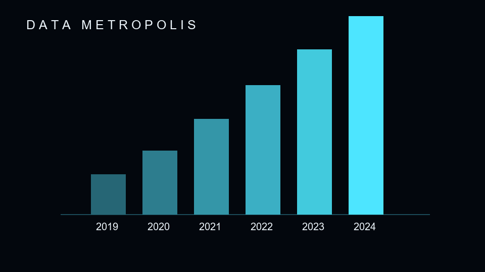

CrazyLabs
Junior AI Creative Technologist
AI automation, agentic workflows, orchestration and multimodal generation.
AI automation, agentic workflows, orchestration and multimodal generation.
Graduated in 2026. Computer science, data engineering, security and AI.
Pattern mining, data analytics, time-series processing and large-scale data systems.
AI education, communication, presentations, leadership and management.
Coding education, development foundations, mathematics and computer science.
Use the arrow keys to move between projects and Enter to open one.

Guide the butterfly through the room. Click or tap after it lands to release it; use arrow keys to steer and R to reset.

An assortment of visual experiments, posters and imagined landscapes.

A spatial ML pipeline in Python that flags elongated scratch patterns hiding inside millions of wafer dies, built with XGBoost and SHAP.

A retrieval-augmented generation workflow in n8n: documents go into a Pinecone vector store with OpenAI embeddings, and a chat agent answers questions from them.
AI-generated portraits in one consistent studio look, plus vertical motion tests and selfie-style stills exploring how a synthetic persona can hold together across images and video.
Surreal night-sky scenes and edited street photos, shown as a slowly drifting gallery of landmarks under the Milky Way.

Short AI-generated clips set in one neon cyberpunk world: a robot food truck, a night bazaar, a worship circle and a tunnel chase.

Explore the cyberpunk repair shop render and the interactive solarpunk character, an imported mesh rigged for animation.

Explore four code-based motion films: Data Metropolis, Obsidian X-01, The Chain Reaction and The Heist. These source-based browser players are silent.